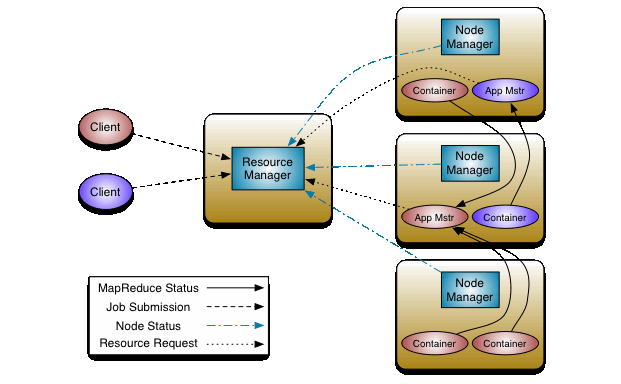
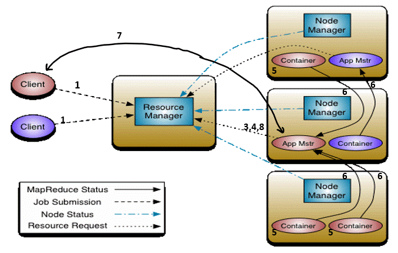

YARN - Yet Another Resource Navigator
YARN - Yet Another Resource Negotiator
Introduction
The basic idea behind the introduction of YARN was to split the functionality of Resource Management and Job scheduling. Prior to YARN, MapReduce-1 was used in which there were 2 component Job Tracker and Task Tracker where Job Tracker was used to do work of both the job scheduling and task progress reporting, these 2 are run as 2 different entities in YARN/MapReduce -2 named as Resource Manager and Application Master.
Components
1. Resource Manager - It is the ultimate authority that allocates resource among all application in
the system. It is also responsible for allocating container in which application master will start and
initializing it after container allocation.
2. Node Manager - It is responsible for monitoring container and their resource usage.

3. Application Master - it is responsible for negotiating resources from Resource Manager and working with
node manager to execute and monitor the container and their resource consumption
4. Container - Depict bunch of resource like CPU, Memory, and Disk etc. required for processing of the task.
It is the result of successful resource allocation from the resource manager. Container grant the right to
application master to use a specific amount of resource on a specific machine (node) in a cluster.
There can be multiple containers on the same machine.
Communication flow within YARN
1. Client program submit the application and specification for application master
2. Resource manager takes responsibility to allocate specified container in which Application Master will
start, then it initiates Application Master.
3. Application Master boot up and register with Resource manager. This help client to get to know certain
required details directly via Application Master.

4. Application Master then makes a resource request to resource manager for allocation of the container
with the appropriate resource via Resource Request Protocol (RRP).
5. On successful container allocation Application Master introduce it to Node Manager with required details
for launching container. Before starting container Node Manager verifies container allocation with Resource
Manager to avoid fake allocation.
6. When Application code executes within the container, the container provides appropriate information to
its Application Master via Application Specific Protocol (ASP).
7. During execution client directly connect with Application Master to get Status, Progress etc. via
Application Specific Protocol.
8. Once the process of the application submitted by the user is complete, Application Master deregister
itself with Resource Manager and shut down, allowing its own container to release and reuse.
Along with it, all the container are released again.